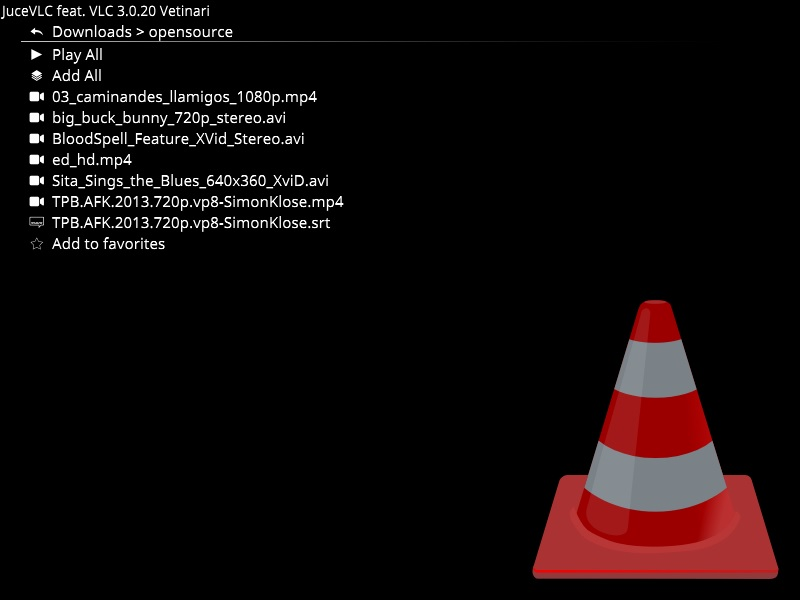

A fullscreen User Interface for VLC
Summary
JuceVLC is VLC with a simple MediaCenter-like fullscreen User Interface.
Goal
Browse and watch movies from your couch with a wireless mouse.
Features
- Browse files and adjust settings using On Screen Display (O.S.D.)
- Big, customizable fonts size and no tiny popup dialogs
- Subtitles selection and synchronization using slider via O.S.D.
- Keep last and favorite video folders
- Does not mess up your system: settings are stored in the application folder
- Portable: Paste is on any usb key or external hard drive
- JuceVLC application uses regular VLC core libraries/plugins: You can paste future VLC versions directory along JuceVLC to update the core video player without any JuceVLC update
- The "space-key" allows your relatives to play/pause when interupting your video;-)
Contact
News-
2013/03/15
Release 0.2:
-Fixed disappearing controls on pause
-Added video adjustments (contrast, ...) -
2013/03/16
Release 0.3:
-Fixed windowed mode being activated on video stop
-Fixed window dragging with a new title bar
-Added font size selection
-Added new icons -
2013/03/17
Release 0.4:
-Smarter OSD Controls disappearing
-Subtitles position slider (avoids subtitles being hidden by controls)
-Save last 30 videos progress
-Fixed moved window flickering
-Added new configuration option (subtitles size, video deinterlace, video acceleration, video quality). They affect the next played video (added Apply option for this)
Browse files
On Screen Display

Subtitles management and adjustment

Quick adjustement : audio volume, subtitles delay, audio delay, playback speed, disable